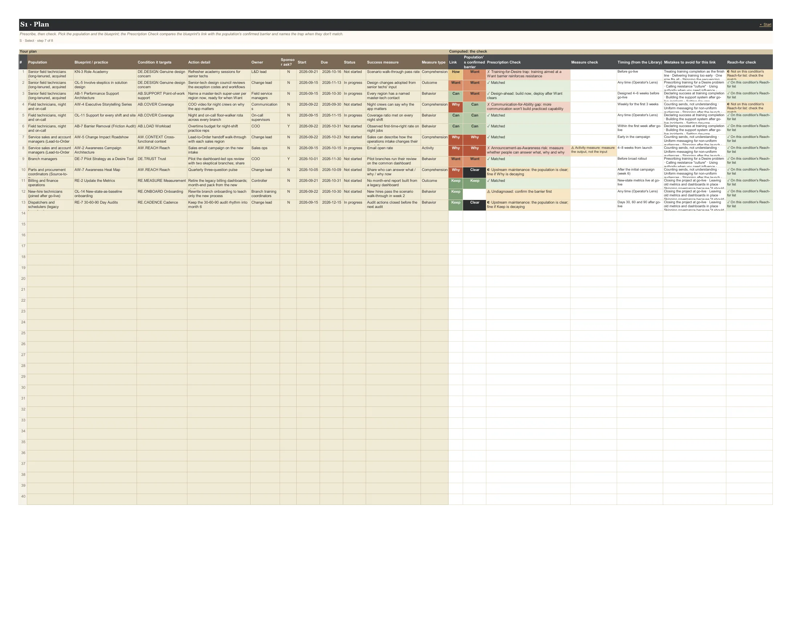
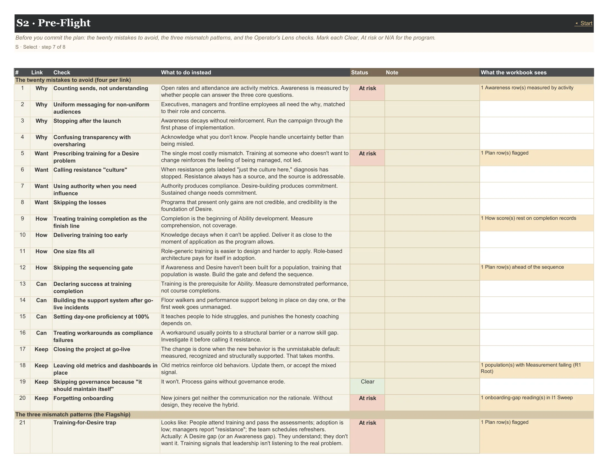

User guide · The tabs
2 tabs: S1 Plan, S2 Pre-Flight.
Select interventions matched to the failing condition, and check them. The Plan's Prescription Check compares each intervention's link with the population's confirmed barrier and names the trap when they don't match; Pre-Flight turns the twenty mistakes to avoid into a checklist.
Context (opens in a new tab): The Prescription Trap · Awareness: Build a Change Campaign · Desire: Resistance Is a Design Problem · Knowledge: Why Most Training Programs Are Delivered in the Wrong Order · Ability: Where Change Programs Actually Stall · Reinforcement: The Phase That Determines Whether Change Sticks
On this page: S1 Plan · S2 Pre-Flight
Prescribe, then check. Pick the population and the blueprint; the Prescription Check compares the blueprint's link with the population's confirmed barrier and names the trap when they don't match.
One row per intervention. Pick the population, the blueprint or practice, and the condition it targets; add the action, owner, dates, status and a success measure with its type.
The Prescription Check is the heart of the tab. It compares the practice's link with the population's confirmed barrier and says Matched, Design-ahead (build now, deploy after the barrier clears), Upstream maintenance, Undiagnosed (confirm the barrier first), Premature (sequence gate), or names the trap: Training-for-Desire, Communication-for-Ability, Announcement-as-Awareness.
Mark Sponsor ask = Y for a conversation only the sponsor can have; it goes to the Sponsor Brief. A measure of type Activity (sends, attendance, completions) is flagged: measure the output, not the input.

Reads from: F1 Setup F2 Populations Population Card
| Column | Type | What it means | Values |
|---|---|---|---|
| Your plan | |||
| # | fixed | ||
| Population | input | dropdown: the population names from F2 Populations | |
| Blueprint / practice | input | The 40 blueprints, the 15 Operator's Lens practices, and one Custom entry per link. | AW-1 Three-Question Awareness AuditAW-2 Awareness Campaign ArchitectureAW-3 Manager ToolkitAW-4 Executive Storytelling SeriesAW-5 Change Impact RoadshowAW-6 Listening Before BroadcastingAW-7 Awareness Heat MapAW-8 Cost of the Status Quo Evidence PackageDE-1 WIIFM MatrixDE-2 Engineering Constructive Dissatisfaction… 50 more |
| Condition it targets | input | The failing condition this answers (R1 Root). The Reach-for check says whether the blueprint is on that condition's shortlist. | AW.WHAT WhatAW.WHY WhyAW.NOW Why nowAW.REACH ReachAW.TRUST Trust in the messageAW.CONTEXT Cross-functional contextDE.PAIN PainDE.PROMISE PromiseDE.TRUST TrustDE.LOSS Loss and identity… 29 more |
| Action detail | input | ||
| Owner | input | ||
| Sponsor ask? | input | Y puts this row on the Sponsor Brief: a conversation only the sponsor can have. | YN |
| Start | input | date | |
| Due | input | date | |
| Status | input | Not startedIn progressDoneBlockedDropped | |
| Success measure | input | ||
| Measure type | input | Measure understanding, not activity. Comprehension, Behavior or Outcome. Activity (sends, attendance, completions) gets flagged. | ComprehensionBehaviorOutcomeActivity |
| Computed: the check | |||
| Link | computed | ||
| Population's confirmed barrier | computed | ||
| Prescription Check | computed | ✓ Matched · ✓ Cross-link practice · ✓ Design-ahead · ◐ Design-ahead, barrier not confirmed · ◐ Upstream maintenance · ⚠ Undiagnosed · ✗ Premature · ✗ Training-for-Desire trap · ✗ Communication-for-Ability gap · ✗ Announcement-as-Awareness risk. | |
| Measure check | computed | ||
| Timing (from the Library) | computed | ||
| Mistakes to avoid for this link | computed | ||
| Reach-for check | computed | ||
Before you commit the plan: the twenty mistakes to avoid, the three mismatch patterns, and the Operator's Lens checks. Mark each Clear, At risk or N/A for the program.
Before you commit the plan, walk the twenty mistakes to avoid, the three mismatch patterns and the Operator's Lens checks, and mark each Clear, At risk or N/A. Where the workbook can see evidence of a mistake (for example a Training-for-Desire row in the Plan), it says so beside it.

Reads from: F1 Setup I1 Sweep R1 Root S1 Plan
| Column | Type | What it means | Values |
|---|---|---|---|
| # | fixed | ||
| Link | fixed | ||
| Check | fixed | ||
| What to do instead | fixed | ||
| Status | input | ClearAt riskN/A | |
| Note | input | ||
| What the workbook sees | computed |
Every result the check can give, in the order it tests them.
| Result | What it means |
|---|---|
| ✓ Matched | The practice's link is the population's confirmed barrier. |
| ✓ Cross-link practice | An Operator's Lens practice that supports every link. |
| ✓ Design-ahead | A design-ahead blueprint aimed past the barrier: build it now, deploy it after the barrier clears. |
| ◐ Design-ahead, barrier not confirmed | A design-ahead blueprint for a population with no confirmed barrier: build now, confirm the barrier before deploying. |
| ◐ Upstream maintenance | Aimed at a link before the barrier, or the population is Clear: fine if that link is decaying. |
| ⚠ Undiagnosed | The population has no confirmed barrier yet: confirm it first. |
| ✗ Premature | Aimed past the barrier: the earlier link must clear first (the sequence gate). |
| ✗ Training-for-Desire trap | Training (How) aimed at a Why or Want barrier: it reinforces resistance. |
| ✗ Communication-for-Ability gap | Communication (Why) aimed at a Can barrier: more communication won't build practiced capability. |
| ✗ Announcement-as-Awareness risk | An Awareness practice for a Why barrier, measured by activity (sends, attendance) instead of comprehension. |
The S1 Plan dropdown: the 40 blueprints (numbered in article order), the 15 Operator's Lens practices, and one Custom entry per link. Design-ahead blueprints are built before their phase, so planning them early is right, not premature.
| Code | Blueprint | Timing | Suggested measure |
|---|---|---|---|
| AW-1 | Three-Question Awareness Audit Before any communication, the team answers three questions in plain language for every major audience: what is changing, why now, and what happens if we don't. This is the brief for everything that follows. | Before designing any communication Design-ahead | Team can answer all three for every audience, in plain language. Comprehension |
| AW-2 | Awareness Campaign Architecture A sustained campaign, not an event: executive launch (week 1), manager cascade (weeks 2–3), honest Q&A with an anonymous channel (week 4), reinforcement through channels (week 5), pulse check (week 6). | 4–8 weeks from launch | Share of each population that can answer what / why / why now at the week-6 pulse. Comprehension |
| AW-3 | Manager Toolkit The manager is the most trusted channel. Give them a 10-slide conversation guide for 20 minutes, an honest FAQ of the top 15 questions, talking points tied to their function, and a two-page department impact brief. | Ready before the manager cascade | Cascade conversations held by every manager; team pulse shows the three answers. Comprehension |
| AW-4 | Executive Storytelling Series Short (3–5 minute) recorded videos shot in a real operational setting. Each answers the three questions from a different angle: the business case, the risk of the status quo, what success looks like. | Weekly for the first 3 weeks | Why and why-now answers improve in the target populations. Comprehension |
| AW-5 | Change Impact Roadshow Walk representatives of every affected function through the end-to-end flow, pausing at each handoff to show what changes, for whom and why. Makes interdependencies visible and surfaces integration gaps. | Early in the campaign | Each function can describe how its upstream and downstream partners change. Comprehension |
| AW-6 | Listening Before Broadcasting Run 10–15 structured interviews or focus groups first, to learn what people already believe, what assumptions are pre-loaded, and which fears need to be addressed head-on. | Before the campaign launches Design-ahead | Campaign answers the concerns people actually raised. Comprehension |
| AW-7 | Awareness Heat Map Run a 3-question pulse by team and plot it on the org chart. Strong areas shift to maintenance; weak areas get targeted conversations, not another broadcast. A low team usually has a manager who hasn't run the cascade. | After the initial campaign (week 6) | Gaps located by team; targeted follow-up closes them by next pulse. Comprehension |
| AW-8 | Cost of the Status Quo Evidence Package Current performance data showing where the status quo is failing (errors, cycle time, complaints, compliance, cost), paired with 2–3 brief stories. Data shows the scope; stories make it real. Builds Awareness and Desire together. | Early in the campaign | Population can state, specifically, what the current state is costing. Comprehension |
| Code | Blueprint | Timing | Suggested measure |
|---|---|---|---|
| DE-1 | WIIFM Matrix For each population: the frictions the change removes, capabilities it gives, risks it removes, and what it enables. Then the other side, honestly: what they lose. The brief for all Desire content and conversations. | Before any Desire-building work Design-ahead | Every population has gains AND losses written, validated with its members. Comprehension |
| DE-2 | Engineering Constructive Dissatisfaction Make the limits of the current state visible and personal with data and story together ("our rework costs this team about 4 hours per person per week"). Validates the friction people already feel. | Before and during the campaign | Population names the current-state pain as its own. Outcome |
| DE-3 | Resistance Mapping Workshop A facilitated workshop with leaders and managers producing a segmented map: likely source (fear, loss, distrust, genuine design concern) and intensity of resistance per population, with a proactive response for each. | 4–6 weeks before implementation Design-ahead | Every population has a resistance hypothesis and a planned response. Outcome |
| DE-4 | Change Champion Network Well-networked, trusted peers (not necessarily top performers) who model the new behavior and report back what they hear. Select for peer influence, equip with the full picture, activate with specific tasks, meet biweekly. | Recruit early; forums every two weeks | Champions active in every population; resistance themes reported each forum. Behavior |
| DE-5 | Personal Impact Dialogues Manager-led small-group or one-on-one conversations: acknowledge the size of the change, what changes for their role, what they lose, how the future connects to what they want from their work, and a promise to get answers. | The 30 days before go-live | Every person has had a dialogue; open questions answered. Behavior |
| DE-6 | Visible Loss Acknowledgment Say out loud what people are giving up: "the expertise you've spent years building in the current system is being retired. That's real, and it matters." People don't need to hear their losses are fine; they need to know leadership sees them. | Throughout | Losses named in leadership communications; trust indicators improve. Behavior |
| DE-7 | Pilot Strategy as a Desire Tool Proof, not promises. Pilot with a representative, credible group that includes skeptics, and share what went wrong as well as what went right. Uniformly glowing pilot reports breed skepticism. | Before broad rollout | Pilot results, including what was hard, shared with the skeptical populations. Outcome |
| DE-8 | Recognition for Participation Recognize adoption effort, not only results: teams hitting early milestones, champion and early-adopter stories, visible adoption boards, personal recognition from senior sponsors. | From the first adoption milestones | Recognition delivered at each adoption milestone. Behavior |
| Code | Blueprint | Timing | Suggested measure |
|---|---|---|---|
| KN-1 | Gate Training on Awareness and Desire Don't launch a population's role training until its Why and Want are adequate (not actively resistant, understands why). If Awareness work is running long, move that cohort's training. Defend the sequence. | Before any role-specific training Design-ahead | No cohort trained while its Want score is at or below the threshold. Behavior |
| KN-2 | Role-Based Learning Architecture Not "what does everyone need to know?" but "what does each role need?" Role map, capability gap analysis per role, learning path per role, then format selection. | Designed before training starts Design-ahead | Every role has a learning path mapped to its capability gaps. Comprehension |
| KN-3 | Role Academy Cohort academies by role combining instruction, sandbox practice, cases from their own operation, and peer discussion of edge cases. The cohort identity carries into the Ability phase. | Before go-live | Scenario walk-through pass rate by cohort. Comprehension |
| KN-4 | Microlearning Library (90-Day Companion) Short (2–5 minute) modules indexed by task, not topic, available at the point of work, and maintained as the process evolves. Where real Knowledge demand lands after go-live. | Live at go-live; first 90 days Design-ahead | Library usage by task; support tickets on covered tasks fall. Behavior |
| KN-5 | Just-in-Time Sequencing Deliver Knowledge close to application. Foundational concepts early; process and system training 2–4 weeks before go-live; exceptions and edge cases in the first 30 days after. Push back on front-loaded calendars. | Foundations weeks before; process 2–4 weeks before; exceptions first 30 days after | Training-to-application gap per cohort; day-1 error rate. Comprehension |
| KN-6 | Digital Adoption Platform In-application guidance (walkthroughs, contextual tips, usage tracking) that appears exactly when and where it's needed. Among the highest-ROI Knowledge tools for system changes. | For technology-centric changes, at go-live | Feature usage by population; help-desk load on guided tasks. Behavior |
| KN-7 | Knowledge Map A simple table of roles × Knowledge units × delivery format × timing × owner × status. Shows every requirement has a delivery mechanism, and tells the Ability phase what foundation was laid. | Designed with the learning architecture Design-ahead | Every Knowledge unit per role has an owner, a format and a date. Comprehension |
| KN-8 | Check for Understanding Application, not recall: scenario questions, role-plays with coaching, and manager dialogues ("walk me through how you'd handle..."). A struggle on a scenario is a coaching trigger for the Ability phase. | During and after training | Scenario pass rate, not completion rate. Comprehension |
| Code | Blueprint | Timing | Suggested measure |
|---|---|---|---|
| AB-1 | Performance Support Architecture Who to call (a named contact, not just "the help desk"), where to find guidance in 30 seconds, who is on the floor, pre-documented paths for the top 10 exception scenarios, and an escalation protocol with response times. | Designed 4–6 weeks before go-live Design-ahead | Every population knows its named contact and its 30-second guidance path on day 1. Behavior |
| AB-2 | Floor Walkers / Super Users Credible peers, recognized for the role, physically or virtually present in the first weeks. About one per 15–20 users for high-complexity changes. Deeper training than the general population, and a structured daily debrief. | In place day 1; 2–4 weeks intensive Design-ahead | Coverage ratio met on every shift; daily debrief logs where gaps concentrate. Behavior |
| AB-3 | Coaching Plans Tied to Observation Give managers an observation guide (what correct execution looks like), a coaching (not discipline) conversation framework, a cadence, and an escalation path for someone genuinely struggling. | Daily in week 1; weekly weeks 3–6 | Observed-execution accuracy rises week over week. Behavior |
| AB-4 | Ability Sprints Time-boxed cycles on one behavior or process segment: a definition of competent execution, daily reps with coached feedback, a proficiency target (e.g. without guidance 80% of the time), and a retrospective. | 1–2 week cycles after go-live | Sprint proficiency targets met. Behavior |
| AB-5 | Shadowing and Reverse Shadowing The learner watches an experienced performer in live work, then performs while the expert watches, narrating their thinking. Surfaces the gap between what they think they're doing and what they're doing. | 2–3 sessions per learner | Learner executes the task unguided after the sessions. Behavior |
| AB-6 | Progressive Proficiency Expectations Publish explicit milestones: day 1 core steps with support; day 30 standard cases alone; day 60 most exceptions; day 90 full proficiency. Removes day-one anxiety and gives managers coaching targets. | Communicated before go-live; day 1 / 30 / 60 / 90 Design-ahead | Share of the population meeting each milestone on time. Behavior |
| AB-7 | Barrier Removal (Friction Audit) Walk the process with a frontline employee to find what the environment is blocking: handoffs from teams not yet on the new process, system friction, conflicting policies, unsustainable workload. Many take hours to fix and cost weeks if left. | Within the first week after go-live | Barriers found vs. fixed; time to fix. Outcome |
| AB-8 | Performance Dashboards for Coaching Process compliance, error rates by step and week-over-week trends by person or team, so coaching goes where it's needed. Coaching enablers, not surveillance. | From go-live | Coaching conversations triggered by dashboard signals. Behavior |
| Code | Blueprint | Timing | Suggested measure |
|---|---|---|---|
| RE-1 | Reinforcement Calendar Monthly metrics reviews, quarterly pulse checks, monthly story collection, recognition at 30/90/180 days, refresher communications at 60 and 90 days, quarterly community of practice. Makes reinforcement an operating rhythm. | Designed before go-live; runs 12–18 months Design-ahead | Calendar events held on schedule. Behavior |
| RE-2 | Update the Metrics Update every dashboard and scorecard that touches the changed process, or it will keep reinforcing the old one. Keep adoption rates visible for at least 90 days, and put new-state indicators on leadership scorecards. | New-state metrics live at go-live Design-ahead | No scorecard still measures the old process. Outcome |
| RE-3 | Governance Council Cross-functional, manager level or above, senior sponsorship, with real decision rights. Reviews compliance, removes barriers, shares stories, decides open issues, sponsors improvement. A council without decision rights is a meeting. | Monthly in year 1, quarterly after Design-ahead | Decisions made and barriers closed per session. Outcome |
| RE-4 | Story-Based Reinforcement Metrics show the change is working; stories make people believe it. Someone owns collecting them ("when did the new process prevent a problem?") and they open governance meetings and team huddles. | Monthly collection | Stories collected and used each month. Behavior |
| RE-5 | Policy and SOP Lock-In Mistake-proof the change: SOPs that describe only the new process (archive the old), system-enforced standards, policies that make the old way non-compliant, and templates that embed the new standard. | At go-live Design-ahead | Old documentation and paths removed; share of work on the new path. Outcome |
| RE-6 | Performance Management Integration Adherence in individual reviews; managers accountable for team adoption and coaching; sponsoring leaders evaluated on adoption and business-case realization. People read its absence as "this doesn't really matter." | The first full review cycle after go-live | New-process expectations present in the next review cycle, at every level. Behavior |
| RE-7 | 30-60-90 Day Audits Day 30: are people using it, where are workarounds? (observation). Day 60: is adoption improving, are day-30 barriers fixed? (pulse + data). Day 90: is it the default, who is still struggling? (dashboard + samples). | Days 30, 60 and 90 after go-live Design-ahead | Audit outputs acted on before the next audit. Behavior |
| RE-8 | Process Mining for Compliance Reconstruct actual execution paths from system event logs: share of work on the new path, the steps with the most variance, compliance trends, segmented by team or site. Turns governance from anecdote to evidence. | Continuous, where event data exists | Share of transactions on the new path, trending. Outcome |
| Code | Practice | Link | Article |
|---|---|---|---|
| OL-1 | "What's different this time" evidence Cynicism is earned. Answer it with evidence, not words: visible executive behavior, dedicated resources, honest timelines, and admitting what's hard. | Why | source |
| OL-2 | Downstream-effects coverage When one part of the operation changes, cover the effects downstream: how handoff protocols change and what upstream partners will do differently. | Why | source |
| OL-3 | Supervisor-led delivery Frontline trust runs through the supervisor. A 15-minute honest conversation in the team's own language moves Awareness more than an executive video and an intranet post combined. | Why | source |
| OL-4 | Identity continuity Say which skills and knowledge carry into the new state, and where their expertise is an advantage there. Converts some of the most resistant people into the most effective champions. | Want | source |
| OL-5 | Involve skeptics in solution design Long-tenured resistance is often expertise: they've already run your process through the edge cases. Bring them into the design; the most credible skeptics become the strongest champions. | Want | source |
| OL-6 | Honest, concrete stakes Vague urgency ("we need to stay competitive") moves no one. Concrete stakes do: "at our current error rate, we lose this contract in 18 months." | Want | source |
| OL-7 | Exception scenarios in the curriculum Teach situational knowledge, not just procedure. If training doesn't cover exceptions, people revert to the old process when one appears. | How | source |
| OL-8 | Point-of-work formats For shifts, field teams and distributed sites: supervisor huddles with knowledge checks, mobile job aids, short videos that fit a break. | How | source |
| OL-9 | Internal SMEs as trainers A respected senior operator trained to give a 30-minute walkthrough carries more credibility than an outside facilitator. | How | source |
| OL-10 | Budget Ability like production risk In operations an Ability gap means missed SLAs, compliance incidents, safety near-misses. Budget floor walkers and coaching like equipment or contingency. | Can | source |
| OL-11 | Support for every shift and site Day-shift floor walkers don't help the night operator at 2 AM. Design support explicitly for all shifts, sites and geographies. | Can | source |
| OL-12 | Standard work as the Ability baseline A standard work document defines correct execution: the reference for observation, coaching and self-assessment. Post it where people can see it. | Can | source |
| OL-13 | Control plan with response triggers This is the control phase: a control plan, defined triggers ("if compliance drops below X%, then..."), regular measurement and clear owners. | Keep | source |
| OL-14 | New-state-as-baseline onboarding Every new hire onboarded into the old or hybrid process is a reinforcement gap. Onboarding materials must teach only the new process. | Keep | source |
| OL-15 | Visible leadership behavior The most powerful signal, and it costs nothing: leaders who reference the new process, recognize it, and hold their reports to it. Leaders who tolerate the old way tell everyone the change is optional. | All | source |
| Pattern | Looks like | Actually | How the workbook catches it |
|---|---|---|---|
| Training-for-Desire trap | People attend training and pass the assessments; adoption is low; managers report "resistance"; the team schedules refreshers. | A Desire gap (or an Awareness gap). They understand; they don't want it. Training signals that leadership isn't listening to the real problem. | A How (Knowledge) intervention planned for a population whose barrier is Why or Want. |
| Communication-for-Ability gap | Surveys show high Awareness and Desire, but at go-live performance drops and workarounds multiply; the response is more town halls. | An Ability gap. They know and want to, but can't do it consistently under real conditions. More communication doesn't build practiced capability. | A Why (Awareness) intervention planned for a population whose barrier is Can. |
| Announcement-as-Awareness error | An all-hands was held and a one-pager emailed. Months later most people still use the old process. | Awareness was declared but never built. It takes repeated, multi-channel, role-relevant communication over time. | An Awareness intervention whose success is measured by activity (sends, attendance) instead of comprehension. |
S2 Pre-Flight's checklist, four per link.
| Link | Mistake | What to do instead |
|---|---|---|
| Why | Counting sends, not understanding | Open rates and attendance are activity metrics. Awareness is measured by whether people can answer the three core questions. |
| Why | Uniform messaging for non-uniform audiences | Executives, managers and frontline employees all need the why, matched to their role and concerns. |
| Why | Stopping after the launch | Awareness decays without reinforcement. Run the campaign through the first phase of implementation. |
| Why | Confusing transparency with oversharing | Acknowledge what you don't know. People handle uncertainty better than being misled. |
| Want | Prescribing training for a Desire problem | The single most costly mismatch. Training at someone who doesn't want to change reinforces the feeling of being managed, not led. |
| Want | Calling resistance "culture" | When resistance gets labeled "just the culture here," diagnosis has stopped. Resistance always has a source, and the source is addressable. |
| Want | Using authority when you need influence | Authority produces compliance. Desire-building produces commitment. Sustained change needs commitment. |
| Want | Skipping the losses | Programs that present only gains are not credible, and credibility is the foundation of Desire. |
| How | Treating training completion as the finish line | Completion is the beginning of Ability development. Measure comprehension, not coverage. |
| How | Delivering training too early | Knowledge decays when it can't be applied. Deliver it as close to the moment of application as the program allows. |
| How | One size fits all | Role-generic training is easier to design and harder to apply. Role-based architecture pays for itself in adoption. |
| How | Skipping the sequencing gate | If Awareness and Desire haven't been built for a population, training that population is waste. Build the gate and defend the sequence. |
| Can | Declaring success at training completion | Training is the prerequisite for Ability. Measure demonstrated performance, not course completions. |
| Can | Building the support system after go-live incidents | Floor walkers and performance support belong in place on day one, or the first week goes unmanaged. |
| Can | Setting day-one proficiency at 100% | It teaches people to hide struggles, and punishes the honesty coaching depends on. |
| Can | Treating workarounds as compliance failures | A workaround usually points to a structural barrier or a narrow skill gap. Investigate it before calling it resistance. |
| Keep | Closing the project at go-live | The change is done when the new behavior is the unmistakable default: measured, recognized and structurally supported. That takes months. |
| Keep | Leaving old metrics and dashboards in place | Old metrics reinforce old behaviors. Update them, or accept the mixed signal. |
| Keep | Skipping governance because "it should maintain itself" | It won't. Process gains without governance erode. |
| Keep | Forgetting onboarding | New joiners get neither the communication nor the rationale. Without design, they receive the hybrid. |
Which checks S2 Pre-Flight applies, from the change profile in F1 Setup.
| Check | Applies to |
|---|---|
| OL-15 Visible leadership behavior | every change |
| OL-14 New-state-as-baseline onboarding | every change |
| OL-13 Control plan with response triggers | every change |
| OL-10 Budget Ability like production risk | every change |
| OL-11 Support for every shift and site | switched on by: shift-based or multi-site |
| OL-8 Point-of-work formats | switched on by: shift-based or multi-site |
| OL-4 Identity continuity | switched on by: long-tenured workforce |
| OL-5 Involve skeptics in solution design | switched on by: long-tenured workforce |
| OL-1 "What's different this time" evidence | switched on by: history of abandoned initiatives |
| KN-6 Digital Adoption Platform | switched on by: technology-centric change |